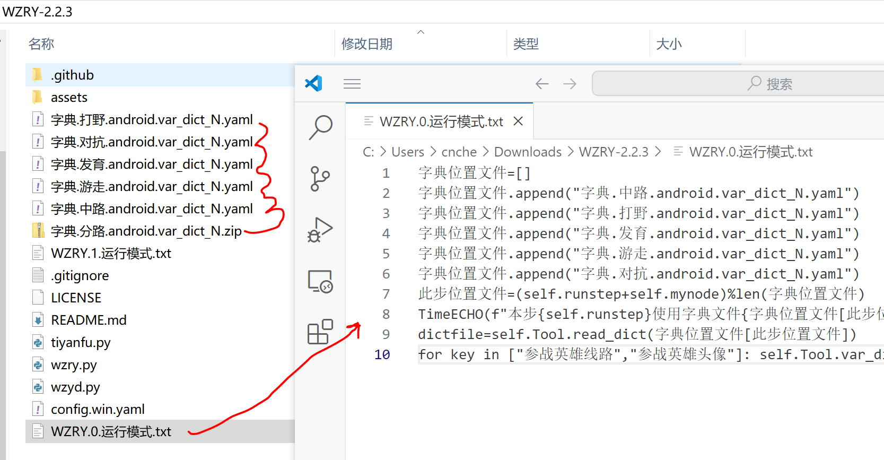
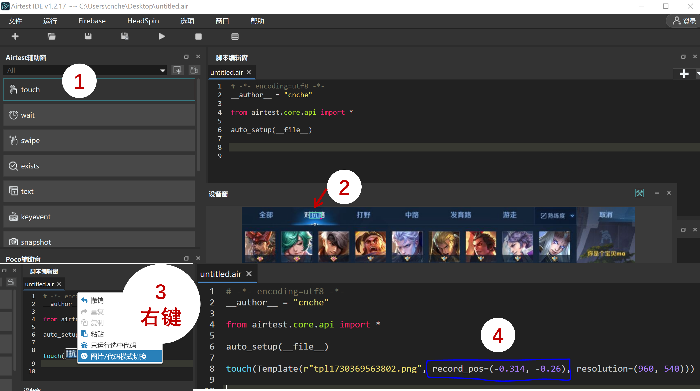

■ 选择英雄
说明¶
若需调整第mynode个账户的对战分路和英雄
- 则在
wzry.py所在的文件夹,创建WZRY.mynode.运行模式.txt文件 - 把
mynode替换为你的账户编号 - 文件为UTF8格式编码, 内容为标准的python语法,不支持超过一行的python语句.
循环选熟练度最低的英雄¶
- 提前在选英雄界面设置为熟练度排序,而不是赛季常用等选项
方法1. 读入英雄绝对坐标¶
在WZRY.mynode.运行模式.txt文件内填入
字典位置文件=[]
字典位置文件.append("字典.中路.android.var_dict_N.yaml")
字典位置文件.append("字典.打野.android.var_dict_N.yaml")
字典位置文件.append("字典.发育.android.var_dict_N.yaml")
字典位置文件.append("字典.游走.android.var_dict_N.yaml")
字典位置文件.append("字典.对抗.android.var_dict_N.yaml")
此步位置文件=(self.runstep+self.mynode)%len(字典位置文件)
TimeECHO(f"本步{self.runstep}使用字典文件{字典位置文件[此步位置文件]}")
dictfile=self.Tool.read_dict(字典位置文件[此步位置文件])
for key in ["参战英雄线路","参战英雄头像"]: self.Tool.var_dict[key]=dictfile[key]
下载字典.分路.android.var_dict_N.zip.解压在脚本目录

Note
我提供的字典文件字典.分路.android.var_dict_N.zip仅作示例并停止更新.
当出现新英雄时,该字典不会选择新英雄.
如果你的分辨率不是960x540也不要使用这个字典.
这两种情况你应该计算出适配你账户的参战英雄线路和参战英雄头像的绝对坐标. 然后填写到对应的字典.分路.android.var_dict_N.yaml文件中.
计算绝对坐标的步骤
计算绝对坐标的步骤¶
在选择英雄界面,使用AirtestIDE截取分路的中心位置

可以得到这样一串代码
touch(Template(r"tpl1730369563802.png", record_pos=(-0.314, -0.26), resolution=(960, 540)))
利用相对坐标record_pos和屏幕分辨率resolution计算新分路的绝对坐标
record_pos=(-0.314, -0.26)
resolution=(960, 540)
x = 0.5*resolution[0]+record_pos[0]*resolution[0]
y = 0.5*resolution[1]+record_pos[1]*resolution[0]
pos = (x, y)
将计算得到(x,y)填到字典.分路.android.var_dict_N.yaml文件中
参战英雄线路: !!python/tuple
- x
- y
新英雄的位置同理,务必选择英雄头像中间的区域,越小record_pos越精准. 当王者因为其他活动更改界面时，同样可以这样手动修改android.var_dict_mynode.yaml中的坐标(例如大厅的战令入口、商店入口、活动入口的位置经常变,而且图标也跟着宣传海报变，不修改代码的前提下，直接修改记录位置的android.var_dict_mynode.yaml是最快的).
方法2. 计算英雄相对坐标¶
Tip
在你已经熟练掌握方法1, 并且理解了逻辑之后.其实,我们完全可以把坐标直接写在WZRY.mynode.运行模式.txt里面.
对于分辨率960x540,dpi=160的模拟器, 使用 方法1中的计算绝对坐标的步骤 可以发现：
对角线上的两个英雄之间的相对坐标record_pos差约为(0.09,0.11)。
第1列第1行的英雄的record_pos为(-0.45,-0.2)
英雄列表共(9列,5行), 第i列第j行的英雄坐标为(-0.54+i*0.09,-0.31+j*0.11).
如果你使用分辨率960x540,dpi=160的模拟器,可以直接抄我下面的配置,填到的WZRY.mynode.运行模式.txt中。
分路名称=["对抗", "打野","中路","发育","游走"]
index=(self.runstep+self.mynode)%len(分路名称)
TimeECHO(f"本次{self.runstep}对战分路: {分路名称[index]}")
#
# 第(列,行)的英雄位置
pos=[(6,5),(9,5),(4,4),(9,2),(2,4)][index]
参战英雄头像坐标=(-0.54+pos[0]*0.09,-0.31+pos[1]*0.11)
参战英雄线路坐标=[(-0.314, -0.26), (-0.194, -0.26), (-0.069, -0.26), (0.037, -0.26), (0.18, -0.26)][index]
self.Tool.cal_record_pos(参战英雄头像坐标, self.移动端.resolution, "参战英雄头像", savepos=True)
self.Tool.cal_record_pos(参战英雄线路坐标, self.移动端.resolution, "参战英雄线路", savepos=True)
Danger
该功能也可以用于刷特定分路、特定的英雄(此时不能按照熟练度排序). 即直接设置pos和参战英雄线路坐标的值.
其他分辨率的设备,请使用AirtestIDE截图获得record_pos后,计算自己的坐标规则.
选择特定分路和英雄¶
- 对于分辨率960x540,dpi=160的模拟器,在
WZRY.mynode.运行模式.txt文件内填入下面内容,则会选中对抗路和第6列第5行的英雄. - 其他的分辨率,阅读上面的循环选熟练度最低的英雄内容, 就知道怎么操作了.
分路名称=["对抗", "打野","中路","发育","游走"]
index=1
TimeECHO(f"本次{self.runstep}对战分路: {分路名称[index]}")
#
# 第(列,行)的英雄位置
pos=(6,5)
参战英雄头像坐标=(-0.54+pos[0]*0.09,-0.31+pos[1]*0.11)
参战英雄线路坐标=[(-0.314, -0.26), (-0.194, -0.26), (-0.069, -0.26), (0.037, -0.26), (0.18, -0.26)][index]
self.Tool.cal_record_pos(参战英雄头像坐标, self.移动端.resolution, "参战英雄头像", savepos=True)
self.Tool.cal_record_pos(参战英雄线路坐标, self.移动端.resolution, "参战英雄线路", savepos=True)